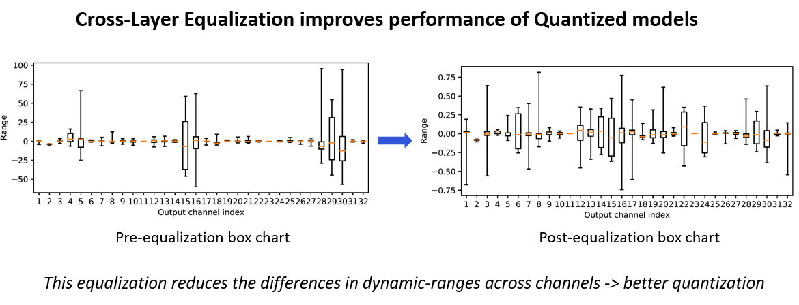

Quantization of floating-point models into lower bitwidths introduces quantization noise on the weights and activations, which often reduces model performance. To minimize quantization noise, AIMET recommends a quantization workflow that includes a variety of post training quantization (PTQ) techniques. You can learn more about these techniques here.
AIMET includes a cross-layer equalization (CLE) tool that applies the following PTQ techniques:
Batch Norm Folding
This feature folds batch norm layers into adjacent convolutional and linear layers. For more on BNF see Batch norm folding.
Cross Layer Scaling
In some models, the parameter ranges for different channels in a layer show a wide variance. See the first chart in the following figure.
Cross-layer scaling attempts to equalize the distribution of weights per channel of consecutive layers. This gives different channels a similar range so that the same quantization parameters can be used for weights across all channels. See the second chart in the figure.

High Bias Fold
Cross layer scaling may result in high bias parameter values for some layers. This technique folds some of the bias of a layer into the subsequent layer’s parameters. This feature requires batch norm parameters to operate on and is not applied otherwise.
importtorchfromtorchvision.modelsimportmobilenet_v2# General setup that can be changed as neededdevice="cuda:0"iftorch.cuda.is_available()else"cpu"model=mobilenet_v2(pretrained=True).eval().to(device)input_shape=(1,3,224,224)
This code example uses MobileNetV2.
We recommend applying the TensorFlow prepare_model API before applying AIMET functionalities. After preparation the model contains consecutive convolutions, which can be optimized through cross-layer equalization.
fromaimet_tensorflow.keras.cross_layer_equalizationimportequalize_modelfromaimet_tensorflow.keras.model_preparerimportprepare_modelfromtensorflow.kerasimportapplicationsmodel=applications.MobileNetV2()print(model.summary())prepared_model=prepare_model(model)print('*** Before cross-layer equalization ***')print('\nprepared_model.layers[1]:')print(type(prepared_model.layers[1]))print('\nprepared_model.layers[4]:')print(type(prepared_model.layers[4]))print('\nPrev Conv weight')print(prepared_model.layers[1].get_weights()[0])print('\nNext Conv weight')print(prepared_model.layers[4].get_weights()[0])
Load the model for cross-layer equalization. This example converts PyTorch MobileNetV2 to ONNX and uses it in the subsequent code.
We recommend simplifying the ONNX model before applying AIMET functionalities. After simplification, the model contains consecutive convolutions, which can be optimized through cross-layer equalization.
importosimportonnximportonnxsimimporttorchfromaimet_onnx.cross_layer_equalizationimportequalize_modelfromtorchvision.modelsimportMobileNet_V2_Weights,mobilenet_v2pt_model=mobilenet_v2(weights=MobileNet_V2_Weights.DEFAULT)print(pt_model)# Shape for each ImageNet sample is (3 channels) x (224 height) x (224 width)input_shape=(1,3,224,224)dummy_input=torch.randn(input_shape)# Modify file_path as you wish, we are using temporary directory for nowfile_path=os.path.join('/tmp',f'mobilenet_v2.onnx')torch.onnx.export(pt_model,(dummy_input,),file_path,)# Load exported ONNX modelmodel=onnx.load_model(file_path)# Simplifying the modeltry:model,_=onnxsim.simplify(model)except:print('ONNX Simplifier failed. Proceeding with unsimplified model')initializers={init.name:initforinitinmodel.graph.initializer}prev_conv_weight=onnx.numpy_helper.to_array(initializers[model.graph.node[4].input[1]])next_conv_weight=onnx.numpy_helper.to_array(initializers[model.graph.node[5].input[1]])print("*** Before cross-layer equalization ***")print("\nmodel.graph.node[4]:")print(model.graph.node[4].name)print("\nmodel.graph.node[5]:")print(model.graph.node[5].name)print("\nPrev Conv weight")print(prev_conv_weight)print("\nNext Conv weight")print(next_conv_weight)
Execute the AIMET cross-layer equalization API function.
# Cross-layer equalization is working as in-place mannerequalize_model(model=model)prev_conv_weight=onnx.numpy_helper.to_array(initializers[model.graph.node[4].input[1]])next_conv_weight=onnx.numpy_helper.to_array(initializers[model.graph.node[5].input[1]])print("*** After cross-layer equalization ***")print("\nPrev Conv weight")print(prev_conv_weight)print("\nNext Conv weight")print(next_conv_weight)
High-level API to perform Cross-Layer Equalization (CLE) on the given model. The model is equalized in place.
Parameters:
model (Module) – Model to equalize
input_shapes (Union[Tuple, List[Tuple], None]) – Shape of the input (can be a tuple or a list of tuples if multiple inputs)
dummy_input (Union[Tensor, Tuple, None]) – A dummy input to the model. Can be a Tensor or a Tuple of Tensors. dummy_input will be
placed on CPU if not already.